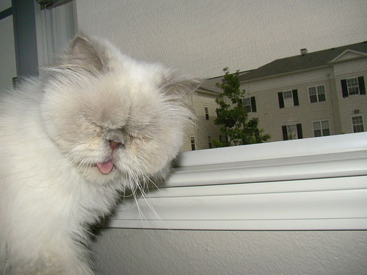

An occasional sneeze in a cat is normal and no real cause for alarm. Just as in humans, sneezing in cats is an explosive release of air through the nose and mouth - often the body’s response to irritants in the nasal passages. Sometimes, excitement or movement can bring on sneezing in cats. However, if your cat’s sneezing won’t go away, or if other symptoms have cropped up along with sneezing, you may need to check with your veterinarian to see if treatment is needed.
